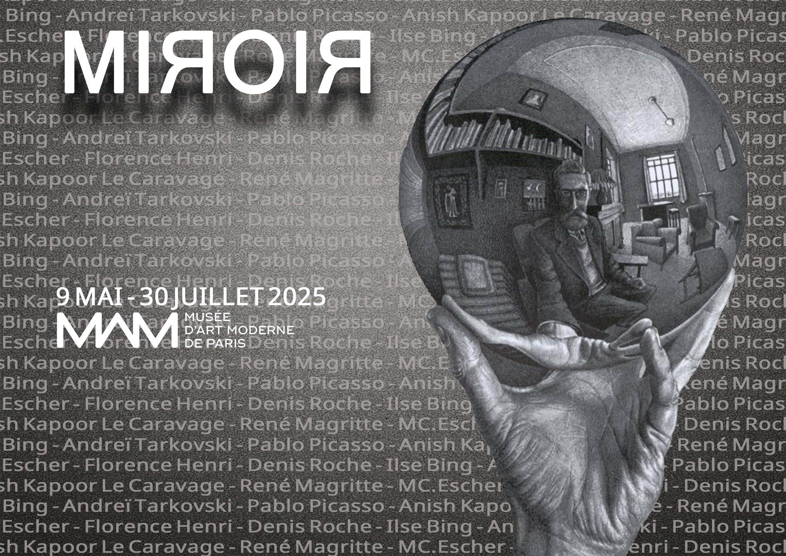
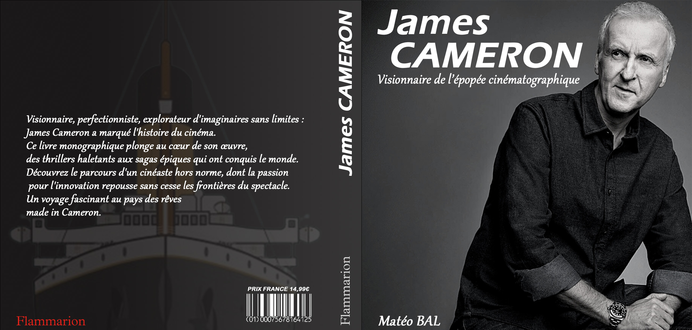

MT
Mateo — Portfolio Web
Étudiant MMI • Spécialisation Web • UI/UX & Front-end

Indie Game Fest
Site web événementiel. Projet de communication digitale réalisé en
situation d’examen, visant à concevoir le site officiel d’un festival.
HTML/CSS
Javascript

Affiche Laïcité
Ensemble pour l'Unité Laïque. Conception d’un support visuel pour un match
de football caritatif au profit de l’association "Unité Laïque".
HTML/CSS
Javascript

Affiche MIЯROIЯ
Exposition au Musée d’Art Moderne. Conception d’une affiche promotionnelle
pour une exposition temporaire intitulée "MIЯROIЯ".
HTML/CSS
Javascript
.jpg)
Affiche Lui
Hommage à Saul Bass. Réalisation d'une affiche expérimentale rendant
hommage au style minimaliste et déstructuré du graphiste Saul Bass.
HTML/CSS
Javascript

Logo Serre Chevalier
Logo & Illustration. Création d'une identité visuelle simplifiée et moderne
pour la station de ski Serre Chevalier.
HTML/CSS
Javascript

Waiting Screen Twitch
Identité visuelle Streaming. Création et animation d'une scène d'attente
immersive pour l'habillage d'une chaîne de streaming.
HTML/CSS
Javascript

Couverture de Livre
Biographie de James Cameron. Conception d’une couverture complète pour un
ouvrage monographique dédié au cinéaste James Cameron.
HTML/CSS
Javascript

Phlox E-commerce
Intégration Web. Réalisation de l'interface front-end d'une boutique en
ligne spécialisée dans les produits high-tech.
HTML/CSS
Javascript